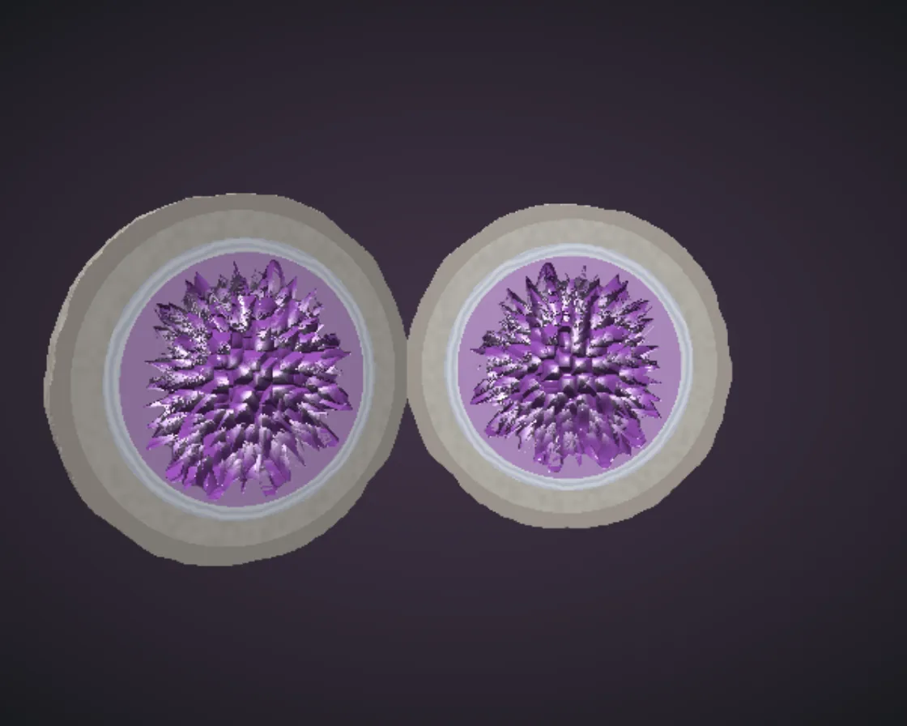

Geode
Geode is a WebGL effect: Voronoi over directions grows faceted crystals inward. One plain JavaScript file with no dependencies; add it with npx motion-library add geode.

Open it live, tune it and copy the code
What is Geode?
A grey stone cracks open like a book to reveal agate bands and a purple crystal lining.
How does Geode work?
One SDF: a noise-roughened sphere split into halves with hollows, whose walls are pushed in by a Voronoi pattern over directions with a squarish metric.
How do I add Geode to my website?
- In your project folder, run
npx motion-library add geode. It writesanimations/geode.js. Needs Node 18 or newer. - Import it and call it with a container element that has a size:
import fx from './animations/geode.js'; const stop = fx(document.querySelector('#hero')); - Call
stop()to clean up, for example when a component unmounts.
Every setting below is also a flag, so you can install it already tuned: npx motion-library add geode --crystals 1.8.
What settings can I tweak?
| Setting | Flag | Default | Range | Step |
|---|---|---|---|---|
| Crystal size | --crystals | 1 | 0.6 to 1.8 | 0.05 |
| Sparkle | --sparkle | 1 | 0 to 2.5 | 0.1 |
| Speed | --speed | 1 | 0.4 to 2 | 0.1 |
Specifications
- Renderer
- WebGL
- Category
- Chrome & 3D
- Dependencies
- None
- File size
- 7.6 KB, unminified
- Interactive
- No: it plays on its own
- Reduced motion
- Plays the same for everyone
- Licence
- MIT-0: use it anywhere, no credit needed
Source code
// Geode: a rough grey stone that cracks in half and opens like a book, and inside it is lined with amethyst. All of
// it is one distance function, raymarched. The stone is a sphere roughened with noise; each half keeps only one side
// of the cut and has a hollow carved out of it. The hollow's wall is pushed inward into points by a Voronoi pattern
// on the sphere of directions: every cell becomes a faceted crystal pointing at the centre, paler at its tip. On the
// cut face you see the layers in section: the rind, the stone, bands of agate, then the crystals.
const PARAMS = { crystals: 1, sparkle: 1, speed: 1 };
export default function (stage) {
const canvas = document.createElement('canvas');
canvas.style.cssText = 'position:absolute;inset:0;width:100%;height:100%;display:block';
stage.append(canvas);
const gl = canvas.getContext('webgl2', { antialias: false });
if (!gl) { stage.textContent = 'This needs WebGL2.'; return () => canvas.remove(); }
const FS = `#version 300 es
precision highp float; in vec2 uv; out vec4 o; uniform vec2 R; uniform float T, OPEN, CR, SP;
mat2 rot(float a) { float c = cos(a), s = sin(a); return mat2(c, -s, s, c); }
vec3 h3(vec3 p) { p = fract(p * vec3(.1031, .103, .0973)); p += dot(p, p.yxz + 33.33); return fract((p.xxy + p.yxx) * p.zyx); }
float n3(vec3 p) { vec3 i = floor(p), f = fract(p); f = f * f * (3. - 2. * f);
return mix(mix(mix(h3(i).x, h3(i + vec3(1, 0, 0)).x, f.x), mix(h3(i + vec3(0, 1, 0)).x, h3(i + vec3(1, 1, 0)).x, f.x), f.y), mix(mix(h3(i + vec3(0, 0, 1)).x, h3(i + vec3(1, 0, 1)).x, f.x), mix(h3(i + vec3(0, 1, 1)).x, h3(i + vec3(1, 1, 1)).x, f.x), f.y), f.z); }
float fbm(vec3 p) { return n3(p) * .55 + n3(p * 2.1) * .28 + n3(p * 4.3) * .17; }
// crystals: distance to the nearest Voronoi point among directions; near a point the wall stands tallest
vec2 vor(vec3 n) {
vec3 p = n * 5.5 * CR, i = floor(p), f = fract(p); float d1 = 9., d2 = 9.;
for (int z = -1; z <= 1; z++) for (int y = -1; y <= 1; y++) for (int x = -1; x <= 1; x++) {
vec3 g = vec3(x, y, z), q = g + h3(i + g) * .8 + .1 - f; float d = max(max(abs(q.x), abs(q.y)), abs(q.z)) * .7 + length(q) * .3; // faceted
if (d < d1) { d2 = d1; d1 = d; } else if (d < d2) d2 = d;
}
return vec2(d1, d2 - d1);
}
float rock(vec3 p) { return length(p) - 1. - .07 * fbm(p * 2.6) - .025 * fbm(p * 9.); }
float cavity(vec3 p) { vec2 v = vor(normalize(p)); return .7 - .26 * smoothstep(.75, .0, v.x) - length(p); } // > 0 inside the stone around the hollow
// one half: the stone, minus the hollow, minus everything on the far side of the cut
float half_(vec3 p, out float mat) {
float r = rock(p), c = cavity(p), cut = p.x;
float d = max(max(r, c), cut);
mat = cut > max(r, c) - .002 ? 2. : (c > r ? 1. : 0.); // 0 outer stone, 1 crystal, 2 the cut face
return d;
}
vec3 local(vec3 p, float s) { // each half swings open about a hinge at the back
p.x *= s; p -= vec3(-.06, 0, -1.) * vec3(1., 1., 1.); p.xz *= rot(-OPEN * 1.25); p += vec3(-.06, 0, -1.);
return p;
}
float map(vec3 p, out float mat, out float side) {
float ma, mb; vec3 pa = local(p, 1.), pb = local(p, -1.);
float da = half_(pa, ma), db = half_(pb, mb);
side = da < db ? 1. : -1.; mat = da < db ? ma : mb; return min(da, db) * .7;
}
float map(vec3 p) { float m, s; return map(p, m, s); }
vec3 nrm(vec3 p) { vec2 e = vec2(.0015, 0); return normalize(vec3(map(p + e.xyy) - map(p - e.xyy), map(p + e.yxy) - map(p - e.yxy), map(p + e.yyx) - map(p - e.yyx))); }
void main() {
vec2 q = (uv * 2. - 1.) * vec2(R.x / R.y, 1.);
vec3 ro = vec3(0, .55, 4.2), rd = normalize(vec3(q, -2.2)); rd.yz *= rot(-.1);
ro.xz *= rot(.35 * sin(T * .17)); rd.xz *= rot(.35 * sin(T * .17));
// a dark velvet display case under a spotlight
vec3 col = mix(vec3(.05, .03, .06), vec3(.012, .01, .016), length(q * vec2(.6, .9)));
float t = 0., mat = 0., side = 1.; bool hit = false;
for (int i = 0; i < 120; i++) { float d = map(ro + rd * t, mat, side); if (d < .0012) { hit = true; break; } t += d; if (t > 9.) break; }
if (hit) {
vec3 p = ro + rd * t, n = nrm(p), L = normalize(vec3(-.5, .9, .6)), V = -rd, H = normalize(L + V);
vec3 lp = local(p, side); float r = length(lp);
float dif = max(dot(n, L), 0.), amb = .18 + .12 * n.y;
vec3 base;
if (mat < .5) base = mix(vec3(.36, .33, .3), vec3(.5, .47, .42), fbm(lp * 6.)) * (.8 + .2 * n3(lp * 30.)); // the stone's skin
else if (mat < 1.5) {
vec2 v = vor(normalize(lp)); float tip = smoothstep(.62, .48, r);
base = mix(vec3(.24, .06, .36), vec3(.82, .62, .95), tip) * (.75 + .5 * smoothstep(0., .08, v.y)); // amethyst: deep at the root, pale at the tip
} else {
// the cut face: rind, stone, agate bands, then the crystal layer
float band = sin(r * 140. + fbm(lp * 7.) * 6.);
base = r > .95 ? vec3(.42, .38, .34) : r > .8 ? vec3(.58, .55, .5) * (.85 + .15 * n3(lp * 25.)) : r > .72 ? mix(vec3(.78, .8, .86), vec3(.55, .6, .72), .5 + .5 * band) : vec3(.5, .3, .62);
}
col = base * (amb + dif * .95);
float sp = pow(max(dot(n, H), 0.), mat > .5 && mat < 1.5 ? 90. : 18.) * (mat > .5 && mat < 1.5 ? 2.2 * SP : .25);
if (mat > .5 && mat < 1.5) sp *= .4 + 1.6 * step(.82, h3(floor(lp * 60.)).x); // facets glint one by one
col += vec3(1., .96, 1.) * sp;
col *= 1. - .5 * smoothstep(.0, .6, -dot(n, L)) * step(mat, .5);
}
o = vec4(pow(col, vec3(1. / 2.2)), 1);
}`;
const VS = `#version 300 es
in vec2 p; out vec2 uv; void main() { uv = p * .5 + .5; gl_Position = vec4(p, 0, 1); }`;
const sh = (type, src) => { const s = gl.createShader(type); gl.shaderSource(s, src); gl.compileShader(s); if (!gl.getShaderParameter(s, gl.COMPILE_STATUS)) throw new Error(gl.getShaderInfoLog(s)); return s; };
const p = gl.createProgram(); gl.attachShader(p, sh(gl.VERTEX_SHADER, VS)); gl.attachShader(p, sh(gl.FRAGMENT_SHADER, FS)); gl.bindAttribLocation(p, 0, 'p'); gl.linkProgram(p);
if (!gl.getProgramParameter(p, gl.LINK_STATUS)) throw new Error(gl.getProgramInfoLog(p));
gl.useProgram(p); const U = n => gl.getUniformLocation(p, n);
gl.bindVertexArray(gl.createVertexArray()); gl.bindBuffer(gl.ARRAY_BUFFER, gl.createBuffer());
gl.bufferData(gl.ARRAY_BUFFER, new Float32Array([-1, -1, 3, -1, -1, 3]), gl.STATIC_DRAW); gl.enableVertexAttribArray(0); gl.vertexAttribPointer(0, 2, gl.FLOAT, false, 0, 0);
let W = 1, H = 1;
const resize = () => { const w = stage.clientWidth || 1, h = stage.clientHeight || 1, d = Math.min(devicePixelRatio, 2, Math.max(0.5, Math.sqrt(290000 / (w * h)))); W = canvas.width = Math.max(1, (w * d) | 0); H = canvas.height = Math.max(1, (h * d) | 0); gl.viewport(0, 0, W, H); };
const ro = new ResizeObserver(resize); ro.observe(stage); resize();
let raf, last = performance.now(), t = 0;
function frame(now) {
const dt = Math.min(0.05, (now - last) / 1000); last = now; t += dt * PARAMS.speed;
// closed, then it splits and swings open, holds, and closes again
const c = t % 11, open = c < 1.5 ? 0 : c < 3.6 ? (1 - Math.cos(Math.PI * (c - 1.5) / 2.1)) / 2 : c < 9.2 ? 1 : c < 10.6 ? (1 + Math.cos(Math.PI * (c - 9.2) / 1.4)) / 2 : 0;
gl.uniform2f(U('R'), W, H); gl.uniform1f(U('T'), t); gl.uniform1f(U('OPEN'), open); gl.uniform1f(U('CR'), PARAMS.crystals); gl.uniform1f(U('SP'), PARAMS.sparkle);
gl.drawArrays(gl.TRIANGLES, 0, 3);
raf = requestAnimationFrame(frame);
}
raf = requestAnimationFrame(frame);
return () => { cancelAnimationFrame(raf); ro.disconnect(); gl.getExtension('WEBGL_lose_context')?.loseContext(); canvas.remove(); };
}